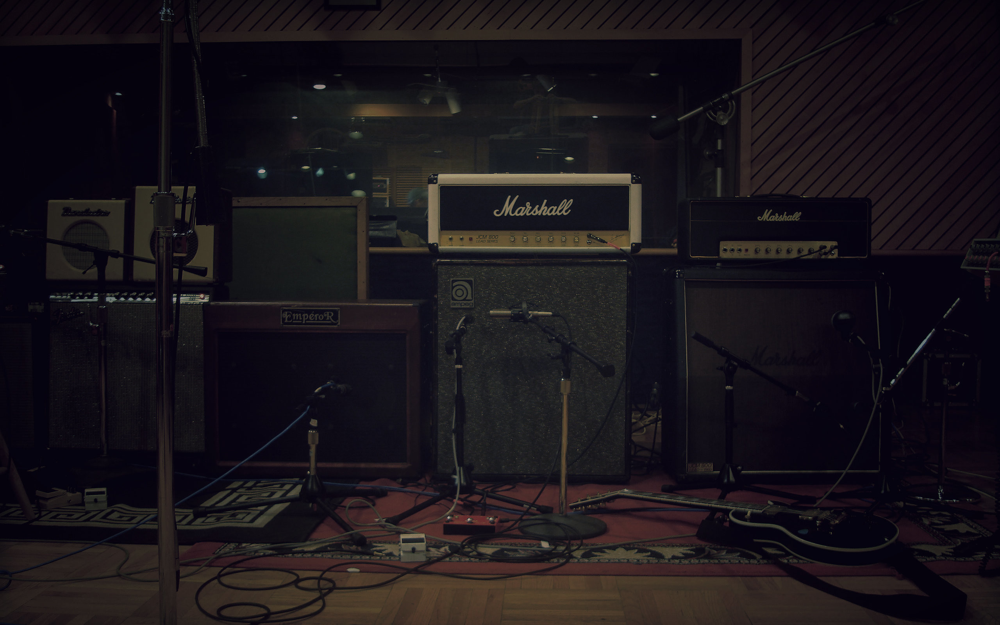
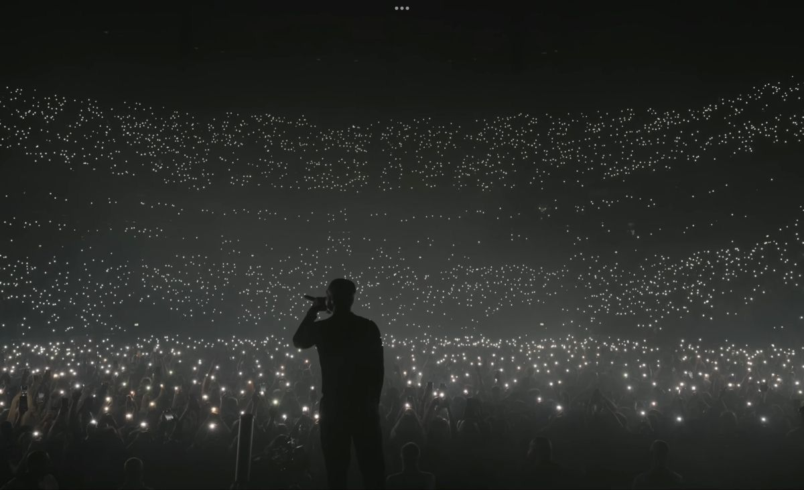
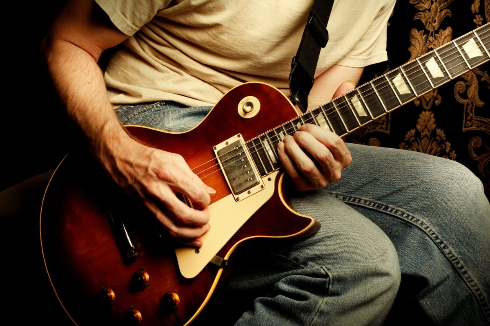
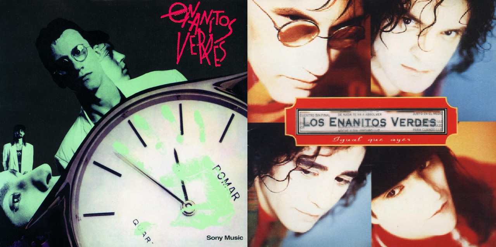

La música es una forma de expresión artística que usa el sonido para comunicar ideas, emociones y sensaciones. Se construye principalmente con ritmo, melodía y armonía, organizados de una manera que tiene sentido para quien la escucha.

Desde pequeño siempre me sentí atraído por la música, tal vez por que con solamente escuchar una canción, mi estado de ánimo podía cambiar, actualmente disfruto de escuchar y analizar el mensaje que el artista quiere trasmitir por medio de las canciones, además de tocar la guitarra, por lo que al mismo tiempo trato de percibir ese mismo sentimiento que percibió el artista al componer su canción.

Escucho música la mayor parte de mi día, cuando estoy haciendo tareas, cuando voy a comer, cuando estoy recostado en mi cama, además trato de dedicar al menos 30 minutos a la guitarra, por lo menos 3 veces a la semana, para poder progresar en ello. Escuchar música es algo que contabilizamos poco, y hoy en día que la tenemos tan a la mano, simplemente reproducimos lo que querrámos en el momento que se nos antoje.

Mi canción favorita se títula, "Igual que Ayer", interpretada por los Enanitos Verdes, mi grupo de música favorito, se trata de un grupo de rock argentino, muy famoso en los años 80s y 90s.